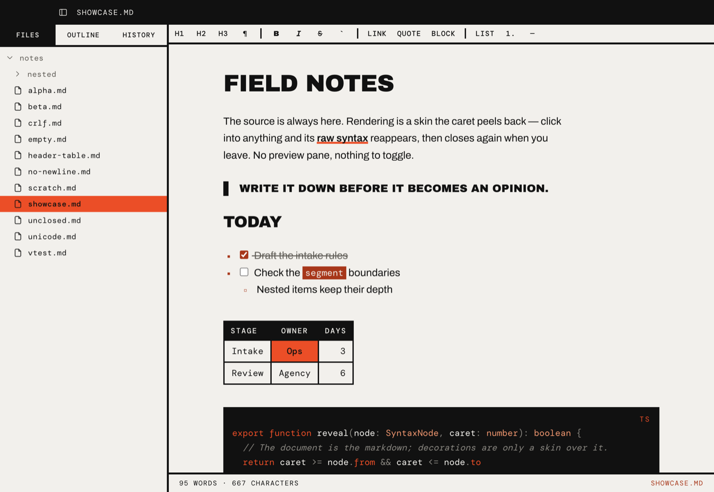
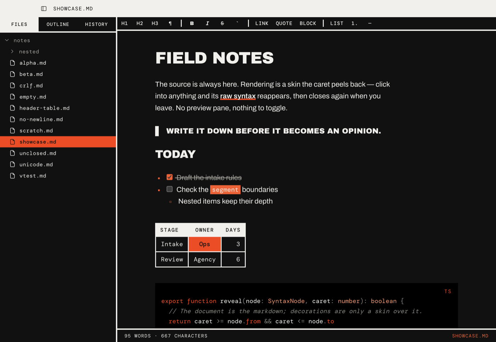
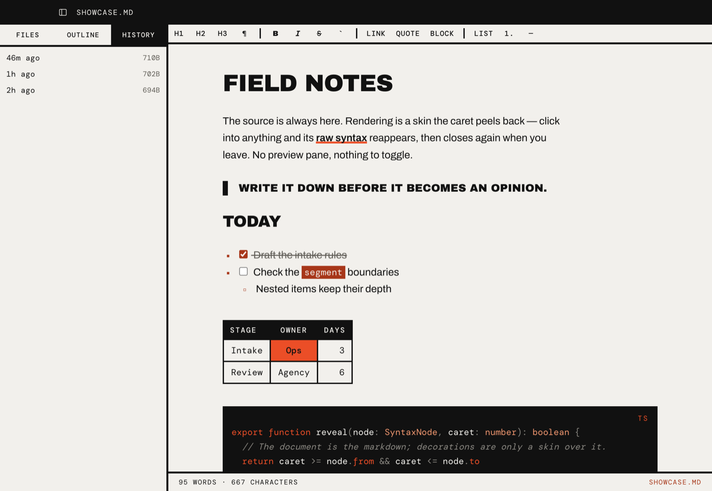

Paper ground, hard black rules, one hot orange. Nothing is softened, nothing is
hidden: emphasis is a fill, structure is a rule, and the chrome speaks in small mono
capitals.
This page shows the system live, drawn by alethia.css.
Switch the theme in the bar above. The rules and the reasons behind them are in the
README; the values, for tools, are in
tokens.json. The app's own stylesheets are the source of
truth for all of it.
Colour
Two neutrals and one spot colour. Swatches follow the current theme; the labels show
both values. Contrast is measured against the ground the token is actually used on.
--bg
Paper / Ink Ground
--text
Ink / Paper Body text
--text-muted
Stone / Stone light Secondary text
--border
Rule / Band Rules and inverted bands
--accent-hot
Hot Fill under ink; text on the code well
--accent
Rust / Hot light Orange readable as text on the ground
--selection
Blush / Ember Selection, row hover
--code-bg
Code well Ink in light, black in dark
Do · orange as a fill, ink on it
showcase.mdThis file changed on disk.
Don't · hot orange as text on paper
showcase.md · unsaved← use --accent instead
Contrast
Web Content Accessibility Guidelines (WCAG) 2 ratios, computed here in the browser from
the values in alethia.css, for both
themes. Text needs 4.5:1 (AA) or 7:1 (AAA). Anything under 4.5 is marked as a fail:
all chrome type is small, so the 3:1 allowance for large text never applies here. The
last two rows fail on purpose: they are the pairs the token split exists to prevent.
Pair
Where
Light
Dark
Type
Three voices, never mixed within a role. Archivo carries reading. Archivo Black shouts,
always in capitals. DM Mono labels everything that is not content.
Display · Archivo Black 400Write it down
Prose · Archivo 400 / 600The source is always here and bold
Mono · DM Mono 400 / 500alpha.md · 710B
h1 · 2.3em
Field notes
h2 · 1.55em
Today
h3 · 1.2em
Intake
h4 · 1.02em
Owners and days
h5 · mono 0.85em
Section label
h6 · mono muted
Quiet label
Body · 1rem / 1.65
Rendering is a skin the caret peels back. Click into anything and its raw syntax reappears, then closes again when you leave.
Micro · 0.62rem +0.1emRecent
Label · 0.66rem +0.1em95 words · 667 characters
UI · 0.7rem +0.08emOpen folder…
Note · 0.72rem +0.02emNo earlier versions yet. One is kept each time a save replaces this file.
Row · 0.75rem +0.02emheader-table.md
Rules & shape
Structure is drawn, not shaded. Four line weights, square corners everywhere, no
shadows. Depth comes from inversion: a band of ink on paper, or paper on ink.
2px · thin
3px · structural
6px · heavy (hr)
8px · slab (quote)
Radius0. The app-icon mask is the only curve in the system.
Chrome
The editor window, rebuilt from the .al-* classes. Hover the rows, tabs and toolbar to
see the two interaction colours: hot fill for "pointing at", inversion for "pressed" or
"selected". Tab through it to see the focus outline the guide adds.
showcase.md
This file changed on disk since you loaded it.
Field notes
The source is always here. Rendering is a skin the caret peels back — click into anything and its raw syntax reappears.
Write it down before it becomes an opinion.
Draft the intake rules
Check the segment boundaries
Nested items keep their depth
Buttons
Input · rename in place
State marks
FocusTypewriter
Pinned panel · history rows
beta.md
Empty state · with recent folders
No folder open.
Recent
Prose
Plain semantic HTML inside .al-prose,
set the way the editor renders markdown.
Today
Text is strong, emphasised, struck, or
inline code. A link is a filled label, not an
underline.
Ordered markers are mono, in accent
They hang in the same 1.6em gutter as bullets
Nested numbering restarts
Square bullets: filled
Then open at the next depth
And filled again below that
Stage
Owner
Days
Intake
Ops
3
Review
Agency
6
export functionreveal(node:SyntaxNode,caret:number):boolean{// The document is the markdown; decorations are only a skin over it.returncaret>=node.from&&caret<=node.to&&'visible'!==0}
title: Field notes
tags: [intake, ops]
Screens
The app itself, for comparison with the rebuilt chrome above. Screenshots live in
docs/screenshots/.

Light. File tree, format bar, rendered document.

Dark. The paper inverts; the orange fills stay.

History. Every save keeps the version it replaced.
Mark
App icon · build/icon.svg
Wordmark
Alethiaἀλήθεια · disclosure
Print
On paper the ground is white, every orange goes black, the slabs stay solid and inline
fills become rules. Print this page to see the whole specimen that way; the rules are in
the README under Print.